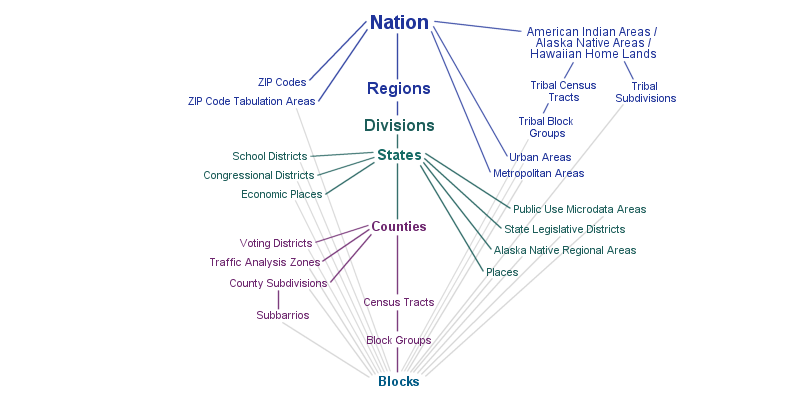

Activity 3
Contents
Activity 3¶
Deadline
Please complete this assignment before Apr 24 11:59pm.
Census data¶
In this activity, we will be downloading our own data!
{kind=link}
Activate the
.gdsPython environment by opening an Anaconda Prompt (miniconda3) (Windows) or Terminal (macOS). Then, on Windows:
.gds\Scripts\activate
Or, on macOS:
source .gds/bin/activate
Note
Make sure you run this command from the same directory as the .gds environment folder.
Open a Jupyter Notebook by running:
jupyter notebook
Tip
If you run this command from your course folder, your .ipynb assignment will automatically be saved there.
Task 1 (5 points)¶
Install the
censusand theuspackages by running the following lines in our Jupyter Notebook:
!pip install census
!pip install us
The census package provides a simplified interface for downloading data from the Census Bureau’s API. More information about this package can be found here. The us pacakge provides provides convenient access to FIPS codes for identifying states and counties in the US.
Request a Census API Key.
Test installation by running the following (where
API_KEYis your API key):
c = Census("API_KEY")
data = c.acs5.state(('B25034_011E'), states.OR.fips)
The code above will download the variable B25034_011E for Oregon from the 5-year American Community Survey (acs5). By default, census will download the most recent survey data which is currently 2021. More information about the American Community Survey can be found here.
The variable B25034_011E represents the number of houses built in 1939 or earlier. A full list of variables (or tables) can be found here. If we wanted to download the number of houses built in 1940-1949, 1950-159 etc. we could make a list.
variable_list = ['B25034_002E','B25034_003E', 'B25034_004E', 'B25034_005E','B25034_006E',
'B25034_007E','B25034_008E', 'B25034_009E', 'B25034_010E', 'B25034_011E']
data = c.acs5.state((variable_list), states.OR.fips)
We could then convert this dictionary to a DataFrame so that we can access useful pandas methods.
# Make DataFrame
df = pd.DataFrame(data)
# Drop last column
df = df.drop(['state'], axis=1)
Finally, we can plot the data.
plt.plot(df.values[0])
Task 2 (5 points)¶
Now it’s your turn to download Census variable(s) for a place or topic of interest. Note that we are not restricted to states. We can also download data at smaller geographic units such as counties, tracts, or even block groups. See below for a summary of the different geographic units and here for more information.
{kind=link}
From the README on the census GitHub page, the syntax for downloading at the tract level is state_county_tract(fields, state_fips, county_fips, tract). Note that two more arguments are required now, county_fips and tract. We can pass Census.ALL to get all counties and/or tracts.
data = c.acs5.state_county_tract((variable_list), states.OR.fips, Census.ALL, Census.ALL)
Otherwise, we should specify a county. For example, 039 would be Lane County. A table with the county FIPS codes can be found here.
Download some Census data for a variable(s) for a particular place or topic of interest.
Tip
You can use Crtl + F to search for a keyword in the following table.
Describe the data (and the geographic units) that you downloaded.
Task 3 (5 points)¶
The data we downloaded can easily be converted into a DataFrame but it would useful if we could add some spatial information to the data. To do this, we can download a shapefile that represents the corresponding geographic units from here.
If were interested in tract level data we would navigate to the TRACT/ folder and download the .zip file for Oregon (i.e. tl_2021_41_tract.zip)
Tip
We can find the FIPS code for Oregon by running: print(states.OR.fips)
Unzip the file and read the .shp file with geopandas. The two DataFrames can be merged using the following code:
new_df = pd.merge(geodataframe, dataframe, left_on=['TRACTCE', 'COUNTYFP'], right_on=['tract', 'county'], how='inner')
Note
Tracts are unique to each county but not to each state. Hence, there could be multiple tracts with the same value in these DataFrames. To join the DatFrames we must therefore specify both the tract and the county values.
Task 4 (5 points)¶
Make a chloropleth map showing a variable of interest
Customize the plot so it looks more presentable.
Important
Save your notebook locally in both .ipynb and .pdf formats but only submit the pdf to Canvas.